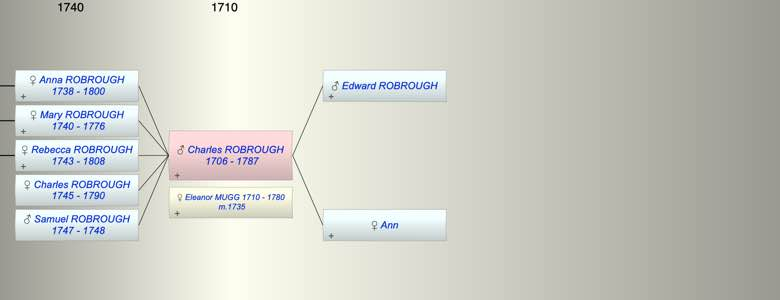

| [Index] |
| Charles ROBROUGH (1706 - 1787) |
|  |
| b. 1706 at London |
| m. 10 Apr 1735 Eleanor MUGG (1710 - 1780) at London |
| d. 1787 aged 81 |
| Parents: |
| Edward ROBROUGH |
| Ann |
| Children (5): |
| Anna Maria ROBROUGH (1738 - 1800) |
| Mary ROBROUGH (1740 - 1776) |
| Rebecca ROBROUGH (1743 - 1808) |
| Charles ROBROUGH (1745 - 1790) |
| Samuel ROBROUGH (1747 - 1748) |
| Events in Charles ROBROUGH (1706 - 1787)'s life | |||||
| Date | Age | Event | Place | Notes | Src |
| 1706 | Charles ROBROUGH was born | London | Note 1 | ||
| 10 Apr 1735 | 29 | Married Eleanor MUGG (aged 25) | London | Note 2 | |
| 1738 | 32 | Birth of daughter Anna Maria ROBROUGH | |||
| 1740 | 34 | Birth of daughter Mary ROBROUGH | Southwark | Note 3 | |
| 1743 | 37 | Birth of daughter Rebecca ROBROUGH | |||
| 1745 | 39 | Birth of daughter Charles ROBROUGH | |||
| 1747 | 41 | Birth of son Samuel ROBROUGH | Southwark | Note 4 | |
| 04 Feb 1748 | 42 | Death of son Samuel ROBROUGH (aged 1) | Southwark | Note 5 | |
| 1776 | 70 | Death of daughter Mary ROBROUGH (aged 36) | Southwark | Note 6 | |
| Feb 1780 | 74 | Death of wife Eleanor MUGG (aged 70) | Southwark | Note 7 | |
| 1787 | 81 | Charles ROBROUGH died | Note 8 | ||
| Personal Notes: |
|
Will PROB 11/1157 ex Ancestry Charles Roborough, tallow chandler of Southwark,
bequests one third of his estate to his son Charels Roborugh, one third to John Curlilng husband of his daughter Anna Maria and one third to Alexander Curling husband of his daughter Rebecca. Codicil refers to bequests to John and Mary Curling, son and daughter of his late daughter Mary. Proved 11 Sep 1787 |
| Created on a Mac™ using iFamily for Mac™ on 8 Oct 2023 |